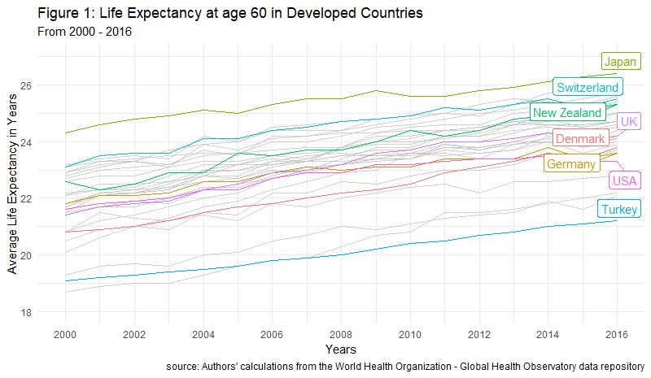

Descriptive Statistics is the process of describing and presenting your data. This is usually done through tables, visualisations and written descriptions of data. For example, if you conduct a survey to find out how much people like a particular brand, you will want to report the number of people that took the survey (the count), the average, minimum, and maximum age or even the median income of every respondant. With these data alone, we could move onto to making more informed and important decisions.
In the previous survey example, every survey taker would be a row, and every question in that survey would form the columns (see the table below). Income, age, and favourite brand, would all represent different arrays or vectors of information in a two-dimensional matrix or dataset.
Name
Income
Age
Favourite Brand
Abraham
70,000
25
Nike
Lisa
110,000
31
Apple
Mark
80,000
24
Garmin
Penelope
55,000
49
Microsoft
Michaela
74,000
51
ZARA
Nicholas
61,000
36
Adiddas
Every one of these arrays can represent a categrorical or quantitative variable. Since data are often messy and even unstructured, we might also find other data structures, or free text (long strings) as the elements of a table like the one above. For the most part though, we will focus on the two types of variables we will often see, quantitative and categorical variables to describe our dataset.
Descriptive statistics are often shown through tables and visualisations. For example, imagine you'd like to know how the average life expectancy of people at age 60 in different countries has changed over time. That visualisation would look like the one below.

So what should we look for when we want to describe data? We want to look for information that gives us facts about the data, such as the most common value of a set of characteristics, how far is a given value in a variable from the average value of that same variable (e.g. how far is the age of a teacher selected at random in all the schools in Sydney from the average age of all teachers in New South Wales). These two kinds of values, the average of a set and the variability of each value in a set, are part of what is known as measures of central tendency and measures of variability, respectively.
Measures of Central tendency, also classified as summary statistics, are calculations that help us describe any data point in our dataset in relation to the most common values. The most common determinants of central tendency are the mean, median, and mode.
Measures of Variability tell us how spread-out our data is. Think about this as how much variation there is, whether up or down, in the income of your closest friends to that of the income of the average Australian. That distance from the income of your friends to the most common income (the average of all) gives us insights as to how much income variability there is in the entire population of Australia. In this instance, your friends would be consider a sample of the population. The most common measures of variability are the range, variance and standard deviation.
How do we describe categories and quantities?
Categorical variables can be shown using frequency tables and visualisations where each category of the variable is given a number representing the amount of times that category was found in the dataset. For example, a question in a survey containing answer choices ranging from Strongly Agree to Strongly Disagree will have 5 categories.
Quantitative variables, on the other hand, can be summarised with averages, percentiles, scatterplots, etc., and tend to provide different perspectives and insights than qualitative variables.
The most useful set of facts we will need will often come from a combination of both, qualitative and quantitative variables. Nontheless, Descriptive Statistics are not only an essential step in the data analytics cycle but are also specially useful when we have a lot of data and want to convey relevant a message with relevant information fast.
Let's go over each one of the most important descriptive statistics.
1 2 3 4 5 6 7 8 910111213141516
importpandasaspdimportnumpyasnpimportmatplotlib.pyplotaspltimportseabornassnsfromutilitiesimportcheck_or_addimportosplt.style.use('fivethirtyeight')pd.set_option('display.max_columns',None)pd.set_option('display.max_rows',None)# Setting pandas fload option to 5 decimal places helps us get rid of scientific notationpd.options.display.float_format='{:.3f}'.format%matplotlibinline%load_extautoreload
1234
path='../data'# for windows users# path = '..\data'
We will need to know how many observations (also known as the n count) are in our dataset and that is exactly what len() gives us. We pass an array of values through the function and it returns the number of all values in that array. len() also takes in strings and gives us back the total number of elements inside a string. Please note, counting and adding several numbers is not the same. To put this into perspective, think about what the average represents, the nominator is a sum of all the elements in an array while the denominator is the amount of elements in such array.
1
len(df)
1
df.shape[1]
We can also count specific categories visually with seaborn.
1234
sns.catplot(x='room_type',data=df,kind='count')plt.xlabel("Room Type")plt.title("Count per room type offered in Melbourne")plt.show()
What we call the mean is actually the arithmetic mean. This is the sum of all the values in a set or array, divided by the amount of numbers in such array. While zeros are always counted in the arithmetic mean, in Python, empty values or NaNs are never counted towards that or any other operation.
$\overline{X}=\dfrac{1}{n}\sum x_{i}$
In the folmula above,
- $\overline{X}$ stands for the mean of array X
- $n$ is the lenght of the array, vector, set, or list
- $\dfrac{1}{n}$ means we will divide everything by the lenght
- The greek letter $\sum$ denotes the sumation of all proceding values
- $x_{i}$ means every value in the array starting from $i$, and $i$ in this instance can be any number
We can observe the mean of some of the quantitative variables in our dataframe with the method .mean().
The median will order an array of numbers from lowest to highest and select the number in the middle. This means that the median is effectively the 50th percentile of any array. If the array has an even amount of numbers, it will return the average of the middle two numbers. If the arrays has an odd amount of numbers, it will return the one in the middle.
Just like with the .mean() method, we can use the .median() method on the quantitative variables of our dataframe and pandas will return the median for all variables. We could also use the .median() method and it will return the a median value for all numerical variables in our dataset. This is not recommended if your dataset is too large and has a lot of variables.
Say we know that our price array has an odd number of elements and we want to get the value at the 50th percentile of our variable. We could, for instance, pass in a slice that selects that same middle numberof the array by computing floor division on the lenght of the array. The reason we would use a floor division is because all divisions in Python return a float and we can't pass floats to a slice. We could, in turn, wrap int() around our division, or the function round() instead to achieve the same result. Let's have a look.
1
len(df)
1
39742/2
123
# if your number is even, get the lower boundlower_bound=(len(df)//2)-1lower_bound
123
# if your number is even, also get the upper boundupper_bound=(len(df)//2)upper_bound
12
# check out the value at x boundsorted(df['price'])[lower_bound]
12
# check out the value at x boundsorted(df['price'])[upper_bound]
123
# confirm the true mediantrue_median=(sorted(df['price'])[lower_bound]+sorted(df['price'])[upper_bound])/2true_median
1
np.median(df['price'])
We can also divide normally and surround the operation with int() to make sure we get an integer for our slice.
To manually get the median of an even array, we need to do a bit more work. We need to
sort the array
create a slice for the middle number and subtract one
add the value on the previous step to another slice without subtracting 1
divide the result by 2
12345
# even arrayarr=np.random.randint(0,200,14)# sum the lower and higher slicers surrounding the median and divide by 2(sorted(arr)[len(arr)//2-1]+sorted(arr)[len(arr)//2])/2
1
arr
1
np.median(arr)
Now, the above cell is illegible and does not help much. Let's decompose it step by step.
123
# first stepsorted_array=sorted(arr)sorted_array
123
# second steparray_count=len(arr)array_count
123
# third stepmiddle_of_array=(array_count//2)middle_of_array
Mode is the most frequent number in an array of numbers. To get the mode we can pass the .mode() method to a series or we take advantage of on of the many methods in the library SciPy. (SciPy stands for scientific computing.) This library is a cousing of NumPy, or maybe a children, and it comes with many similar functionalities as the ones you would find in NumPy.
1
df['city'].mode()
12
# we import the mode function from scipyfromscipy.statsimportmode
When we import the mode function we can pass it to our dataframe and it will return a scipy object with two arrays, one for the values that appear the most, and another for the times it appears the most.
We can pass in this structure to an np.array(), transpose it, and get an array of tuples with each element and its respective value next to each other.
1
np.array(mode(df[more_cols])).T
We can confirm the median of any variable using the .value_counts() method.
Percentiles give us the value at a given location of the array. For example, np.percentile(array, 25) will return the number where 75% of the data is above of, and 25% of the data is below of. In contrast, np.percentile(array, 50) would return the median the median of the array.
12
# This answers the question, what prices am I looking within the lower quarter of the array?np.percentile(df['price'],25)
1
np.percentile(df['price'],95)
1
np.median(df['price'])
We can also get a particular percentile manually by multiplying percentages by the length of the array inside a slice of a sorted array. Think of this as masking.
12
print(f"Our fancy percentage finding scheme --> {sorted(df['cleaning_fee'])[int(0.30*len(df))]}")print("NumPy's version --> %f"%np.percentile(df['cleaning_fee'],30))
The Range of a set is the difference between the maximum and minimum numbers of an array. Going back to our income example, if the highest-paid person in Australia made 2,000,000/year and the lowest-paid person made 500/year, then the range of that set would be the difference between the two, or 1,999,500. This is regardless of the lenght of the array as the range focuses on content not quantity of values.
We can use np.ptp() to get the range of a numerical array or we can compute the range ourselves in several different ways with regular Python.
Variance tells us how much variation to expect in an array of data ($x$) with at least 2 numbers. For example, say we have two groups with 5 professional athletes in each. One group has soccer players and the other has tennis players. Now imagine we first ask each group how much do they spend eating out each week, and then we calculate the average of those amounts. Once we do this, we are surprised to find out that both groups of athletes spend the same on average eating out, about 570/week. Here is the data.
Athlete
Group
Money Spent/Week
Serena Williams
Tennis
\$570
Roger Federer
Tennis
\$570
Venus Williams
Tennis
\$570
Rafael Nadal
Tennis
\$570
Maria Sharapova
Tennis
\$570
Cristiano Ronaldo
Soccer
\$700
Hope Solo
Soccer
\$380
Loenel Messi
Soccer
\$200
Mia Hamm
Soccer
\$650
Diego Maradona
Soccer
\$920
Although the average is the same for both groups, the variation per group and player (as seen above) is extremely large. The tennis group's variation is equal to 0 while the variation of the soccer group is much greater than that.
Here is the mathematical formula for the variance before we see it in code. To calculate it, we sum the squared difference of each data point of an array from the mean of that same array. We then divide the sum by the lenght of the array.
In the folmula above,
- $\overline{X}$ stands for the mean
- $n$ is the lenght of the array, vector, set, or list
- $\dfrac{1}{n-1}$ means we will divide everything by the lenght
- The greek letter $\sum$ denotes sumation
- $x_{i}$ means every x value starting from i. In other words, every element of the array
- $\sigma^{2}$ --> squared standard deviation, aka result
- $\left( x_{i}-\overline {x}\right) ^{2}$ means the square difference
Let's calculate the variance using different methods in Python.
12
# remember this variablesome_numerical_vars
12
# we can use a method on the entire arraydf[some_numerical_vars].var()
We can also use the numpy method on a one dimensional array.
1
np.var(df['minimum_nights_avg_ntm'])
The last option is to do it ourselved with by coding every step of the formula.
1
df['price'].mean()
123
# first take the difference between each data point and the mean of the arraydiff_var=(df['price']-df['price'].mean())diff_var.head()
123
# then squared the differencepower_two=diff_var**2power_two.head()
123
# sum the array of differencessum_price_diff=power_two.sum()sum_price_diff
123
# then divide the sum of differences by the lenght of the array minus 1variance=sum_price_diff/(len(df)-1)variance
12
# imagine if we were to do that whole process in one line of codesum([(x-df['price'].mean())**2forxindf['price']])/(len(df['price'])-1)
Let's unpack what just happened in the cell above.
We initialised a list comprehension
then subtracted the mean of the price column from every one its prices
we then squared the result
summed everything up
and finished by dividing the final product by the n count of the price variable minus 1
In statistics, the variance and the standard deviation of a sample al always divided by n - 1. This is to signify the understatement of the true parameter $\overline {X}$ which we don't know.
The Standard Deviation measures the dispersion of some data from its mean. Think of the dispertion of (normally distributed) data as percentage blocks surrounding the average, mean and median values (see the picture below).
Every data point in these blocks is said to be 1, 2, or 3 standard deviations away from the mean. Additionally, these blocks provide us with an expectation for future values in percentage terms. Meaning, if we were to ask how many of the data points in our set are 1 standard deviation below the mean, we would mention that X% of our data points would land on that block. A more succint example would be, if crazy rainy days in Australia happened with a frequency of 1 standard deviation below or above the mean, and the weather temperatures were normally distributed, we could say that we would expect crazy rainy weather about 34% (up or down) of the time in a year. Of course, we could be even more specific about this, but the important distinction to keep in mind here is that sequential regions within a distribution can only be found in this form when the distribution of the data is normal.
In the folmula above,
- $\overline{x}$ stands for the sample mean
- $n$ is the lenght of the array, vector, set, or list
- $\dfrac{1}{n-1}$ means we will divide everything by the lenght minus 1
- The greek letter $\sum$ denotes sumation
- $x_{i}$ means every x value in our array starting from i
- $\sigma$ --> sigma == Result
- $\left( x_{i}-\overline {x}\right) ^{2}$ means the square difference
np.std() and df[quant_vars_list].std() will return the standard deviation of an array or matrix.
123
# givent the average and the standard deviation of prices, what's the highest value we expect to see 34%# of the time above the mean? Should this be a normally distributed array of course.df['price'].std()
1
np.std(df['price'])
We can also calculate the standard deviation by taking the square root of the variance.
The Minimum & Maximum are the lowest and highest values in an array, respectively. These are useful when we have quantitative variables such as income, or house prices, but not when we have categorical variables such as gender or weekdays. For example, imagine having a variable called food temperature that is classified as hot, warm, or cold (with numerical equivalents of 1, 2, 3). Our functions MIN and MAX will not be very useful for this categorical variable since the distance of such categories would not carry much meaning. In contrast, the difference between an income of $97,000 and an income of $45,000 would be $52,000, and that is also the range between the two.
We can pass in min and max as methods to a dataframe or as numpy functions to arrays.
1
np.min(df)
1
np.max(df)
We can also sort the array and select the first and last elements for the min and the max.
The Skewness of an array tells us how distorted the distribution of such array is from the most common value or the peak of the curve. A rightly-skewed distribution is said to be positively skewed, and the opposite means that there will be a mountain going on the opposite direction (see below).
In the folmula above,
- $\overline{X}$ stands for the mean
- $N$ is the lenght of the array, vector, set, or list
- The greek letter $\sum$ denotes sumation
- $X_{i}$ means every x value in our array starting from i=1
- $\sigma^3$ --> standard deviation to the cube
Another important point to remember is that the mean of a positively-skewed distribution will be larger than the median, and the opposite is true for a negatively-skewed distribution. When skeweness is zero, there's no distortion in the distribution.
1234
# let's see if the cleaning fees in our dataset present a distorted distributionsns.kdeplot(df['cleaning_fee'].sample(500))plt.title("Density distribution for Price per stay")plt.show()
We can also pass the .skew() method to our dataframe and get a sense of how distorted our variables might be.
Kurtosis is a very useful statistic that tells us how much do the tails of the distribution of a random variable differ from those of a normal distribution (e.g. a true bell-shaped curve). It tells us if we have extreme values or not in our variable.
The kurtosis of a normal distribution is usually at a value of 3. A much higher kurtosis than this means that we are dealing with outliers. On the other hand, a lower kurtosis means that the distribution we are dealing with has less extreme values than those seen in a normaly distributed array of data.
In the folmula above,
- $\overline{x}$ stands for the mean
- $n$ is the lenght of the array, vector, set, or list
- The greek letter $\sum$ denotes sumation
- $x_{i}$ means every x value in our array starting from i=1
- $\sigma^3$ --> standard deviation to the cube
Our pandas dataframe has two methods to calculate the Kurtosis. .kurt() and .kurtosis(). They both return the same output.
NB. There is a great medium article on skewness and kurtosis that you can find here.
As data analysts we want to be able to determine how does one variable changes or moves in relation to another. We can do this visually using quantitative variables and scatter plots or with some handy mathematical functions that we can either create ourselves, or use from libraries like NumPy and SciPy. Let's begin by talking about correlation.
Correlation is a measure of how strongly related two variables are with one another. It gives us a way of quantifying the similarity, disimilarity, or lack-therof between variables. The value of the correlation between two variables goes from -1 to 1, where 1 means positively correlated, -1 means negatively correlated, and 0 means no correlation whatsoever. This value is derived by calculating the Pearson Correlation Coefficient, among other measures.
The correlation between two or more variables can be best observed through visualisations such as scatter plots and they can also be directly computed by hand or by using different functions in Python. The mathematical formula is:
$r_{xy}$ is the relationship between the variables X and Y
$x_{i}$ is every element in array X
$y_{i}$ is every element in array Y
$\overline {x}$ is the mean of array X
$\overline {y}$ is the mean of array Y
For the correlation, we are dividing the covariance between the product of the standard deviations of each array. More on covariance below.
1234567
# let's create some columns for our pricesprices=df['price']clean_fee=df['cleaning_fee']mean_price=prices.mean()mean_clean=clean_fee.mean()mean_price,mean_clean
123
# let's sum up the product of the differences between the elements in each array and their meanarrays_diff_sum=sum((prices-mean_price)*(clean_fee-mean_clean))arrays_diff_sum
1234
# let's now compute the square root of the sum of the squared difference between each of the # elements in an array and its meandiff_sqrt=np.sqrt(sum((prices-mean_price)**2)*sum((clean_fee-mean_clean)**2))diff_sqrt
12
r_xy=arrays_diff_sum/diff_sqrtprint("The correlation between regular prices per stay and the cleaning fees is: %.3f"%r_xy)
12
# you can conveniently call the pandas method .corr with two Series as well and achieve the same resultprint("Correlation between prices per stay and the cleaning fees is: %.3f"%prices.corr(clean_fee))
The pearsonr() function from scipy stats will also give you the pearson correlation plus the p-value of the arrays. The P-value is the probability that you would have found the current result in another similar sample if the correlation was in fact zero. Think about this as the least likely chance to see another value like the one we got.
1
fromscipy.statsimportpearsonr
1
pearsonr(prices,clean_fee)[0]
1
df.head()
1 2 3 4 5 6 7 8 910
sample_data=df.sample(500)g=sns.JointGrid(x='cleaning_fee',y='number_of_reviews',data=sample_data,space=0,ratio=17,height=8)g.plot_joint(sns.scatterplot,size=sample_data["price"],sizes=(30,120),color="#B48EAD",alpha=.8,legend=False)g.plot_marginals(sns.rugplot,height=1,color="#A3BE8C",alpha=.6);g.set_axis_labels(xlabel='Cleaning Fee',ylabel='# of Reviews');
Covariance: this statistic tells us how two variables vary together. That is, how does the variation of one variable relates to the variation of another.
We can calculate the covariance of two arrays X and Y by first computing the distance between the mean and each of the values within the arrays. dx below represents the distance of each value x from its mean. The same is true for the dy.
Lastly, we multiply each distance from both arrays, add the resulting values, and then divide by the lenght of one of the arrays (which have to be both of the same length).
If both arrays variate in the same direction, the result will be positive. If their variations are completely unrelated, we are likely to get a 0. If both arrays variate negatively, the result will be negative. This is also visible when the a corresponding value in each array is below or above the mean. In this instance, the latter would be positive and former negative.
Both numbers tend to scale with each other. A large positive covariance means that if x is large then y is large as well, and when x is small then y is small as well. If the covariance between arrays is 0, there is no relationship whatsoever between them.
1
prices.shape
12
# let's make sure both have the same lenghtprices.shape[0]==clean_fee.shape[0]
12
# np.dot takes the products of two elements and sums them upnp.dot((prices-prices.mean()),(clean_fee-clean_fee.mean()))/len(prices)
Notice that Pearson Correlation only measures whether there is a linear relationship between the variables in question. This mean, that the relationship could be other than linear, hence, no relationship in the Pearson's test doesn't mean that there is no relationship at all.
One of the flaws of pearson correlation is that it does not deal well with outliers. There are other methods available for determining non-linear relationships that do deal with outliers, but we won't cover those here. These are the Spearman Rank Correlation test and the Kendall Correlation test.
Another way to use descriptive statistics to gain deeper insights from a particular dataset is by cross-tabulating its variables. This technique allows us to aggregate and observe data based on distinct variables sitting on top of one another (columns) or standing next to each other (rows).
You have already seen a bit of cross-tabulation in previous lessons and provably while using a spreadsheet software, but let's dig a bit deeper into how to use these tools.
Let's look at the comparison between prices charged by super hosts and prices charged by non superhosts per different countries. We will do so by using a pivot table for our aggregation method. The most important arguments of a pivot_table are
- values --> what we want to aggregate (single column or list of columns). Usually a quantitative variable
- index --> what we want to represent in the rows (single column or list of columns). Usually a categorical variable or a date one
- columns --> what we want to represent in our columns (single column or list of columns). Usually a categorical variable
- aggfunc --> the aggregation method we want to use (single method or list of methods)
Because the output of a pivot_table is essentially a reduced dataframe, we can use the plot method from pandas to visualise our results.
123
super_country_hosts.plot(kind='bar',title='Average Price Charged by Super and Regular Hosts',rot=45,color=['#434C5E','#88C0D0'])plt.legend(['False','True'])plt.show()
As a side note. It would also be interesting to see whether there is a big gap between the distribution of reviews received by super hosts and regular hosts, and across rooms.
1 2 3 4 5 6 7 8 91011
sns.set('notebook')sns.set(rc={'figure.figsize':(11.7,8.27)})sns.violinplot(x="room_type",y="number_of_reviews",hue="host_is_superhost",data=df.sample(5000),palette="Pastel1")plt.title("Reviews Distribution by Host and Room Type")plt.xlabel("Types of Rooms")plt.ylabel("Prices")plt.show()
To understand groups better, we cam create a multi-index object using the pandas method .grouby(). This method is another useful tool for aggregating data and one that you might end up using a lot for data analysis with Python. Its mechanics are a bit different than that of pivot_tables but the results are almost the same. How does .groupby() works then
We first call the method on our data, e.g. df.groupby
We then select the variable or variables (as a list if multiple) that we would like to split our data by, e.g. df.groupby('cars') or df.groupby(['cars', 'cylinders'])
We now have a lazy groupby object from which we can select columns and aggregation methods for, e.g. df.groupby('cars')['km_per_galons'].mean() would give us the average kilometers per gallons by car brand
We can also specify multiple aggregation functions for a column, or specific aggregation methods for each columns (e.g. as a dictionary {'column': 'mean'}) using the .agg() method after the a specific columns or the groupby object itself
You can learn more about the awesome groupby through the pandas documentation here.
1
df.head(2)
123
# first groupbygroup_rooms=df.groupby('room_type')group_rooms
123
# select one columna_column=group_rooms['accommodates']a_column
12
# perform a computation on the columna_column.max()
123
# you can call other pandas functions on that same column# here is the percentage of people each room accommodatesa_column.value_counts(normalize=True)
12
# you can also describe a column by the categories of your groupby objectgroup_rooms['price'].describe()
12
# in addition, you can be as specific as you want when specifying your aggregation methodsgroup_rooms['cleaning_fee'].agg(['mean','count','max','min','var','std'])
12
# multiple columns will give you multiple levels between your columns and aggregationsgroup_rooms[['accommodates','beds']].agg(['mean','count','max','min','var','std'])
123
# you can also get multiple levels on the indeces with the groupby callrooms_cancel_policy=df.groupby(['room_type','cancellation_policy'])rooms_cancel_policy['number_of_reviews'].max()
12345678
# we can also aggregate specific columnsspecific_group=df.groupby(['host_identity_verified','instant_bookable'])specific_group.agg({'price':'mean','cleaning_fee':'median','security_deposit':'max','extra_people':'min'})
 Source: Tudor Networks by Kim Albrecht, Ruth Ahnert, and Sebastian Ahnert
Source: Tudor Networks by Kim Albrecht, Ruth Ahnert, and Sebastian Ahnert


:max_bytes(150000):strip_icc()/TC_3126228-how-to-calculate-the-correlation-coefficient-5aabeb313de423003610ee40.png)